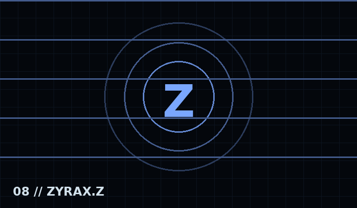

Clásico
Jugabilidad rítmica principal con charts, notas, eventos y cámaras propias.
NRX combina las bases rítmicas de FNF con modos alternos y secuencias que aparentan romper los límites de la ventana del juego.
Jugabilidad rítmica principal con charts, notas, eventos y cámaras propias.
El jugador interpreta la parte del oponente, cambiando la perspectiva musical del enfrentamiento.
Modo vocal opcional diseñado alrededor del micrófono, siempre con consentimiento explícito.
Cinco ventanas visibles: Zyrax.Nrx y cuatro ejecuciones Presagio. La presentación crea una invasión de escritorio controlada, con permisos claros y sin acceder a datos personales.

Micrófono, carpetas seleccionadas y navegador se solicitan por separado y son opcionales.
NRX no necesita historial, contraseñas ni datos personales para crear sus anomalías visuales.
Las secuencias deben restaurar el escritorio y cerrar sus ventanas al terminar o reiniciar.